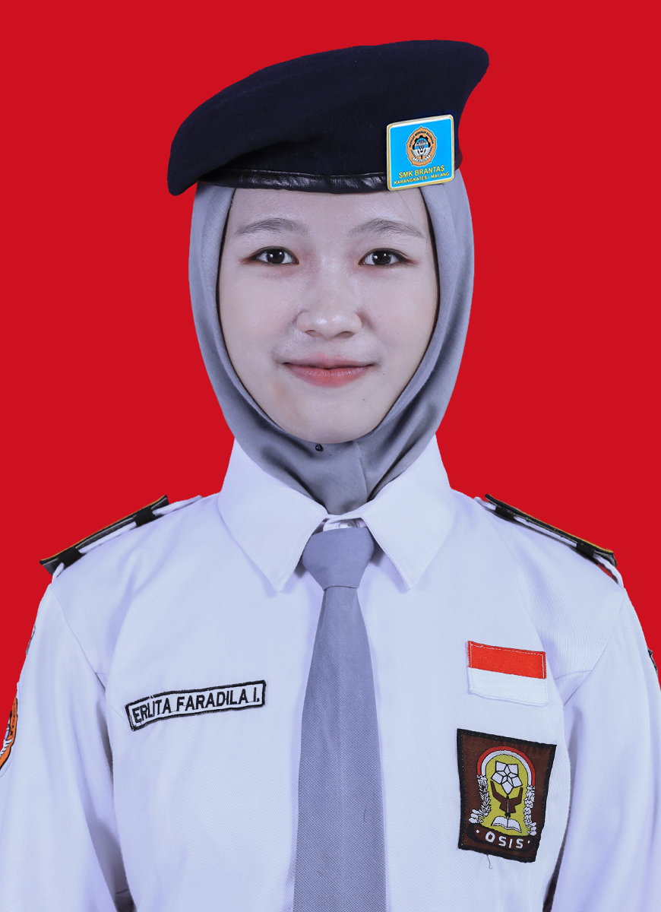
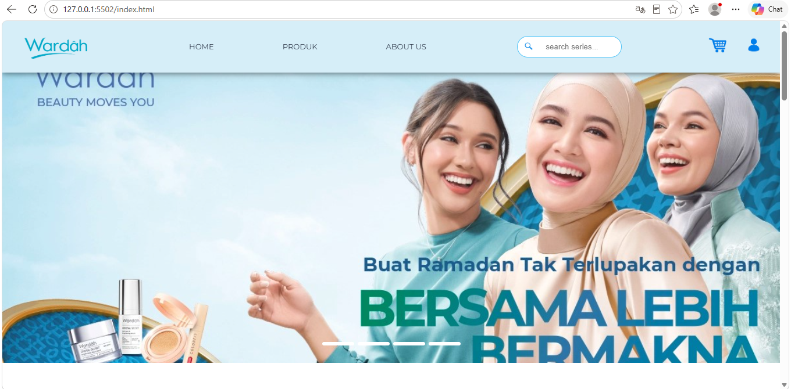
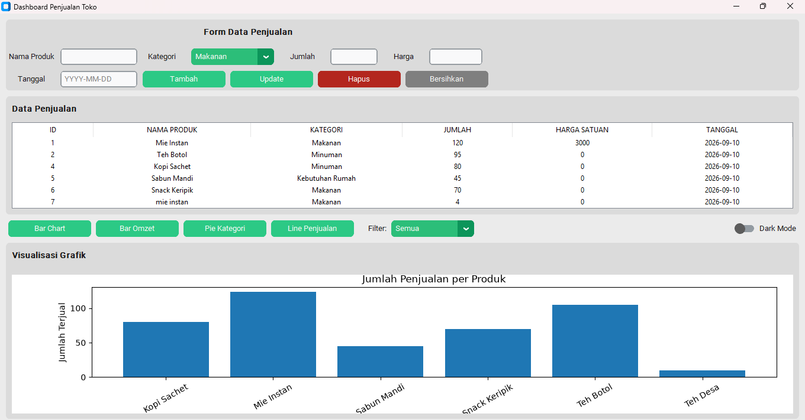
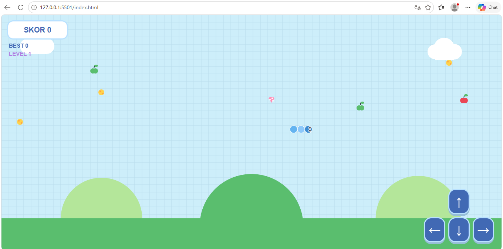

HTML & CSS
Mampu membuat struktur halaman website dan memberikan tampilan menggunakan HTML dan CSS.

Saya adalah pelajar SMK jurusan Rekayasa Perangkat Lunak yang tertarik dengan dunia teknologi dan pengembangan aplikasi. Saya senang belajar membuat website, aplikasi sederhana, serta mencoba berbagai hal baru dalam bidang pemrograman.
hobi saya adalah olahraga bersepeda, di minggu hari libur saya sering bersepeda bersama teman-teman saya.
Mampu membuat struktur halaman website dan memberikan tampilan menggunakan HTML dan CSS.
Mampu membuat program sederhana menggunakan Python, termasuk aplikasi dan game sederhana.
Memahami dasar penggunaan database dan SQL untuk menyimpan serta mengelola data.


